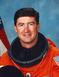

Lyndon B. Johnson Space Center
Houston, Texas 77058
|
National Aeronautics and Space Administration Lyndon B. Johnson Space Center Houston, Texas 77058 |
 |
Biographical Data |
||
Terence T. "Tom" Henricks (Colonel, USAF, Retired)
NASA Astronaut (former)
PERSONAL DATA: Born July 5, 1952, in Bryan, Ohio, but considers Woodville, Ohio, to be his hometown. Married to the former Rebecca Grantham of Marshall, Texas. Three children.
EDUCATION: Graduated from Woodmore High School in 1970; received a bachelor of science degree in civil engineering from the United States Air Force (USAF) Academy in 1974, and a masters degree in public administration from Golden Gate University in 1982.
SPECIAL HONORS: The Distinguished Flying Cross, the NASA Outstanding Leadership Medal, the Defense Superior Service Medal, the Defense Meritorious Service Medal, two Air Force Meritorious Service Medals, two Air Force Commendation Medals, four NASA Space Flight Medals, Honorary Doctor of Science degree from the Defiance College (1993), F-4 Fighter Weapons School Outstanding Flying Award. Named Pilot Training Distinguished Graduate and F-16 Conversion Course Top Gun. Inducted into the Ohio Veterans Hall of Fame.
EXPERIENCE: Henricks completed pilot training at Craig Air Force Base (AFB) in Selma, Alabama, and F-4 conversion training at Homestead AFB in Miami, Florida. He then flew the F-4 in fighter squadrons in England and Iceland. In 1980, he was reassigned to Nellis AFB, Las Vegas, Nevada. After attending the USAF Test Pilot School in 1983, he remained at Edwards AFB, California, as an F-16C test pilot and Chief of the 57th Fighter Weapons Wing Operating Location until his NASA selection. He has 749 parachute jumps and a Master Parachutist rating. He has flown 30 different types of aircraft, has logged over 6,000 hours flying time, and holds an FAA commercial pilot rating.
NASA EXPERIENCE: Selected by NASA in June 1985, Henricks became an astronaut in July 1986. His technical assignments to date include: re-evaluating Shuttle landing sites world wide; Assistant Manager for Engineering Integration in the Shuttle Program Office; Lead Astronaut of the Shuttle Avionics Integration Laboratory at Johnson Space Center, and of Vehicle Test and Checkout at the Kennedy Space Center; Chief of the Astronaut Office Operations Development Branch. He also served as the Assistant for Shuttle to the Chief of the Astronaut Office, directing crew involvement in the development and operation of the Shuttle. A commander of two Space Shuttle missions and pilot of two others, Henricks became the first person to log over 1,000 hours as a Space Shuttle pilot/commander. Tom Henricks left government service in November 1997 to pursue a career in business.
SPACE FLIGHT EXPERIENCE: STS-44 Atlantis launched the night of November 24, 1991. The primary mission objective was the deployment of a Defense Support Program (DSP) satellite with an Inertial Upper Stage (IUS) rocket booster. The mission was concluded after 110 orbits of the Earth returning to a landing on the lakebed at Edwards Air Force Base, California, on December 1, 1991.
STS-55, the German D-2 Spacelab mission, was launched on April 26, 1993, aboard Columbia, and landed 10-days later on May 6, 1993, at Edwards AFB California. During the ambitious mission 89 experiments were performed in many disciplines such as materials processing, life sciences, robotics, technology, astronomy, and Earth mapping.
STS-70 launched from the Kennedy Space Center, Florida, on July 13, 1995, and returned there July 22, 1995. During 142 orbits of the Earth, the crew performed a variety of experiments in addition to deploying the sixth and final NASA Tracking and Data Relay Satellite. STS-70, with an "all-Ohio" crew, was the first mission controlled from the new combined control center.
STS-78 launched June 20, 1996 and landed July 7, 1996 becoming the longest Space Shuttle mission to date. The 16-day mission included studies sponsored by ten nations and five space agencies, and was the first mission to combine both a full microgravity studies agenda and a comprehensive life science investigation. The Life and Microgravity Spacelab mission served as a model for future studies on board the International Space Station.
JANUARY 2000
This is the only version available from NASA. Updates may be sought direct from the above named individual at www.starstruck.org
{kind=link}